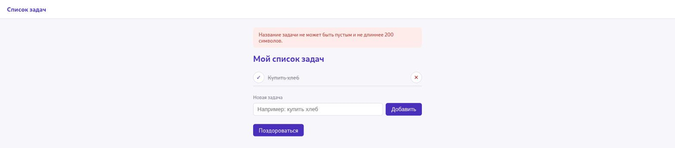

Проверка входных данных и обработка ошибок
Форма в браузере — не единственный способ отправить запрос, поэтому проверка на сервере обязательна.
Раздел 22.4 показал проверку формы в браузере через JavaScript. Это удобно для
пользователя, но никогда не единственная линия защиты: запрос можно отправить и вовсе без
браузера — например, программой, которая обращается прямо к /dobavit
или /api/tasks, без единой строчки JavaScript. Входные
данные необходимо повторно проверять на серверной стороне в каждом маршруте, который их
принимает.
required и maxlength — но это подсказки для браузера, а не гарантия. Ничто не мешает отправить POST-запрос на /dobavit напрямую, в обход формы и любых её ограничений.Проверка в проекте главы
MAX_TITLE_LENGTH = 200
def clean_title(raw_title):
title = raw_title.strip()
if not title or len(title) > MAX_TITLE_LENGTH:
return None
return titlestrip() убирает случайные пробелы по краям (например, если
пользователь нажал пробел, а затем Enter). Пустая строка после этого и слишком длинная
строка — оба случая считаются недопустимыми и возвращают None.
HTML-маршрут и API-маршрут реагируют на ошибку по-разному
| HTML-форма (/dobavit) | API (/api/tasks) | |
|---|---|---|
| Кто читает ответ | Человек в браузере | Программа |
| Реакция на невалидные данные | flash(...) с понятным текстом и редирект обратно (раздел 22.30) | Код 400 и тело JSON с описанием ошибки |
| Пример ответа | Страница со списком задач и сообщением сверху | {{"error": "title не может быть пустым"}} |

data = request.get_json(silent=True)
if not isinstance(data, dict) or not isinstance(data.get("title"), str):
return jsonify({{"error": "поле title обязательно и должно быть строкой"}}), 400
title = clean_title(data["title"])
if title is None:
return jsonify({{"error": "title не может быть пустым и не длиннее 200 символов"}}), 400404 — обращение к тому, чего нет
Если попытаться отметить выполненной или удалить задачу с несуществующим
id, маршрут вызывает abort(404) —
Flask сразу возвращает стандартную страницу ошибки (или JSON для API-путей, раздел 22.9),
не выполняя код дальше.